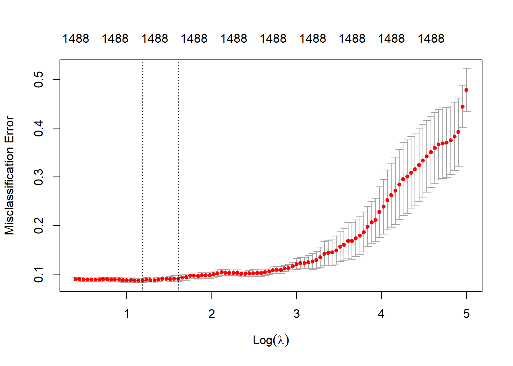
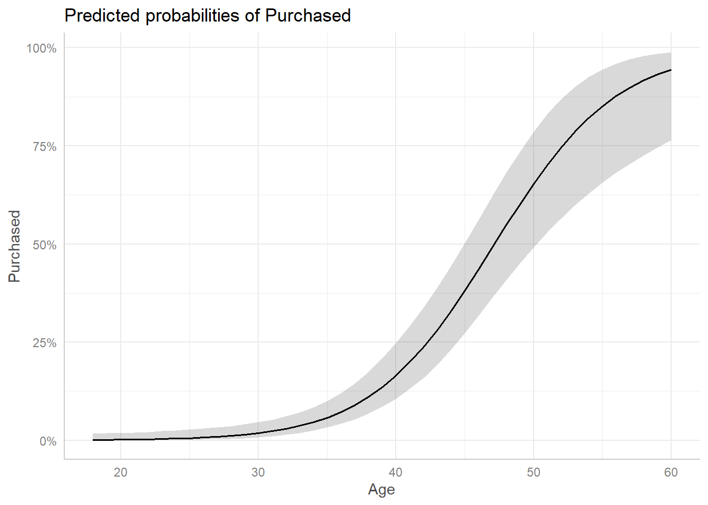
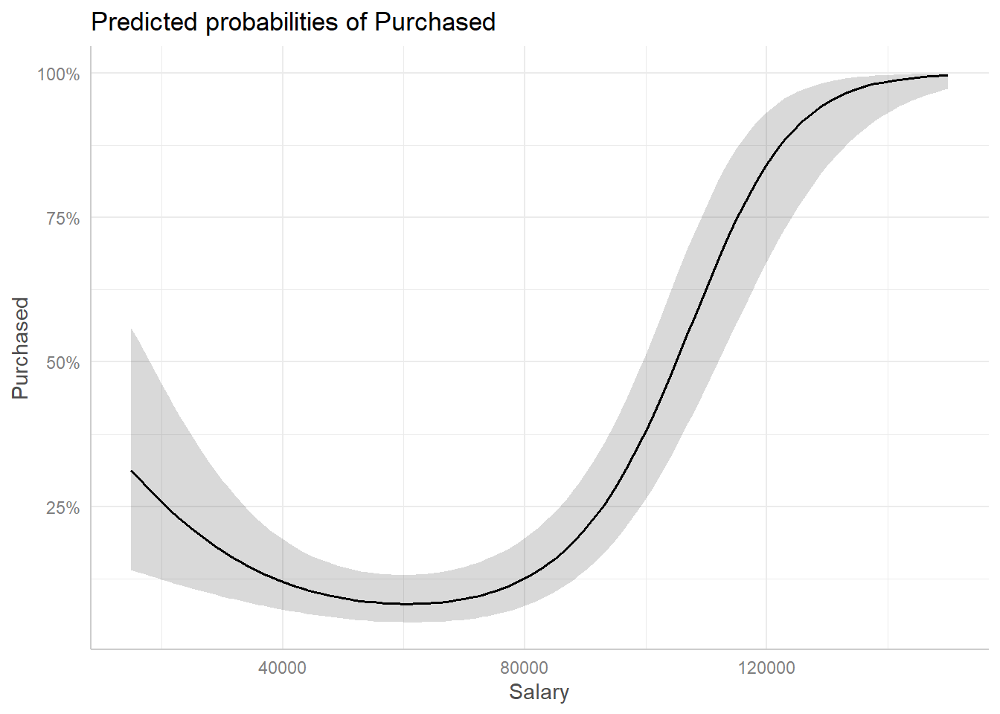

[1] 1003 1496ML_Lab1
Task 1
Would you characterize this data set as being high-dimensional or low-dimensional? Based on this, do you expect that a standard logistic regression will work well for the purpose of prediction?
I would consider this to be a high-dimensional data set as it contains more variables (columns) than observations (rows). I would expect a standard logistic regression to perform rather poorly for prediction DOTDOTDOT
Task 2
a.
Extract the coefficients from the estimated model using the coef() function and inspect the coefficients that are placed 1010–1050 in the output from coef(). Do you notice anything special?
prefer premium prepar pres prescript present presid
NA NA NA NA NA NA NA
presidenti press pressur pretti prevent previous price
NA NA NA NA NA NA NA
primari prime prioriti prison privat privileg pro
NA NA NA NA NA NA NA
probabl problem process proclaim produc product profit
NA NA NA NA NA NA NA
program progress project promis proper propos protect
NA NA NA NA NA NA NA
protest proud provid public puerto pull
NA NA NA NA NA NA Yes, this range of coefficients is exclusively NAs!
b.
Examine the training accuracy of the estimated model. What does this result suggest about the predictive capacity of the model?
[1] 1While the training accuracy is perfect, at 100%, this in no way means that its predictive capacity is similarly good. The test accuracy, which is what truly matters during a prediction task is likely much lower and worse due to the perfect training accuracy. This is due to overfitting, which entails f^ being so flexible that it models the noise contained in the data instead of successfully approximating the true f. In other words, the predictive capacity of this on new data would be bad because our classification model is too flexible which results in overfitting.
Task 3
Use the caret package to implement a 3-fold cross-validation procedure that estimates the test accuracy of a standard logistic regression. Report the accuracy. Does this result align with your expectations from #1 and #2? Do the results from #2 and #3 provide any indications of either over- or underfitting?
Call:
NULL
Coefficients: (495 not defined because of singularities)
Estimate Std. Error z value Pr(>|z|)
(Intercept) -1.186e+01 1.064e+06 0 1
X.N 7.815e+01 1.935e+06 0 1
X.NN 4.660e+01 3.029e+06 0 1
X.NNN 2.486e+02 1.215e+07 0 1
X.NNNN 7.733e+01 4.691e+06 0 1
X.NNNNN -2.444e+01 1.341e+07 0 1
N -4.669e+01 2.074e+06 0 1
NN -3.254e+01 1.155e+06 0 1
NNN -1.584e+01 2.462e+06 0 1
NNNN 1.185e+02 5.784e+06 0 1
NNNNN 1.316e+02 5.093e+06 0 1
NNNNNN 2.784e+02 4.795e+06 0 1
NNth 1.129e+02 4.842e+06 0 1
NNyear 1.597e+01 6.522e+06 0 1
Nnd 5.172e+01 1.317e+07 0 1
Npme -3.182e+02 9.798e+06 0 1
Nth 7.568e+02 3.023e+07 0 1
YYYYNN -7.448e+01 1.471e+07 0 1
YYYi 2.556e+00 1.263e+06 0 1
abc 7.643e+00 3.380e+06 0 1
abe -1.223e+03 4.653e+07 0 1
abl -1.392e+02 4.547e+06 0 1
abort 4.336e+01 2.525e+06 0 1
absolut -6.585e+01 5.234e+06 0 1
absurd 1.310e+00 4.588e+06 0 1
abus -3.690e+01 9.264e+06 0 1
accept 7.744e+01 4.781e+06 0 1
access 8.393e+01 6.735e+06 0 1
accomplish -6.628e+01 5.317e+06 0 1
accord 1.836e+02 8.186e+06 0 1
account -5.912e+02 1.542e+07 0 1
achiev -1.133e+02 1.839e+06 0 1
across 4.025e+01 3.526e+06 0 1
act 4.060e+01 1.355e+06 0 1
action -2.380e+01 8.419e+06 0 1
activ -1.039e+02 3.033e+06 0 1
actual 2.508e+02 4.476e+06 0 1
ad 6.120e+02 1.307e+07 0 1
adam 2.599e+02 5.837e+06 0 1
add 5.215e+02 1.044e+07 0 1
addict -4.813e+02 1.121e+07 0 1
addit 5.799e+02 1.260e+07 0 1
address -3.763e+02 1.784e+07 0 1
administr -8.198e+01 4.051e+06 0 1
advantag 4.157e+02 2.576e+07 0 1
advic 1.895e+02 1.707e+07 0 1
advisor -1.786e+02 1.255e+07 0 1
advoc 1.522e+02 8.123e+06 0 1
affect 3.768e+02 1.164e+07 0 1
afford 1.247e+02 4.987e+06 0 1
african -9.973e+01 4.812e+06 0 1
afternoon 8.432e+02 1.838e+07 0 1
ag 3.863e+02 7.847e+06 0 1
agenc 1.588e+02 5.023e+06 0 1
agenda 1.862e+02 3.649e+06 0 1
aggress -2.219e+02 8.302e+06 0 1
ago 1.852e+02 5.238e+06 0 1
agre 7.123e+01 2.632e+06 0 1
agreement -1.569e+02 6.257e+06 0 1
agricultur -5.131e+01 9.237e+06 0 1
ahead 1.264e+00 4.600e+06 0 1
aid -1.803e+02 4.161e+06 0 1
air -2.748e+02 6.683e+06 0 1
airport -1.084e+02 2.798e+06 0 1
al NA NA NA NA
alabama -2.932e+02 6.939e+06 0 1
aliv 5.419e+02 7.604e+06 0 1
alli -1.572e+02 1.505e+07 0 1
allow 1.453e+02 3.593e+06 0 1
almost -3.835e+01 4.418e+06 0 1
alon 8.178e+02 1.148e+07 0 1
along -3.160e+02 7.721e+06 0 1
alreadi -8.298e+01 4.906e+06 0 1
also -3.089e+02 5.980e+06 0 1
altern -7.797e+01 2.511e+06 0 1
alway 7.801e+01 2.806e+06 0 1
amaz -7.456e+01 6.363e+06 0 1
amazon -1.996e+01 9.163e+06 0 1
ambassador -6.307e+01 1.284e+07 0 1
amend 1.062e+02 9.086e+06 0 1
america -3.123e+01 1.742e+06 0 1
american 8.164e+00 1.046e+06 0 1
among -1.338e+02 2.232e+06 0 1
amount 2.543e+02 6.334e+06 0 1
andrew -3.088e+02 9.283e+06 0 1
angri -3.799e+02 1.878e+07 0 1
announc 1.438e+02 9.101e+06 0 1
anoth -3.524e+01 6.869e+06 0 1
answer -4.338e+02 5.062e+06 0 1
antiimmigr 1.375e+02 2.083e+07 0 1
antitrump -1.162e+03 1.903e+07 0 1
anymor -1.757e+02 1.059e+07 0 1
anyon 2.793e+02 4.688e+06 0 1
anyth -2.416e+02 6.457e+06 0 1
anyway -9.003e+01 4.183e+06 0 1
aoc -1.054e+02 6.044e+06 0 1
apart -5.543e+02 1.787e+07 0 1
apolog 2.736e+02 9.097e+06 0 1
appeal -1.067e+03 1.796e+07 0 1
appoint -1.619e+01 4.383e+06 0 1
appreci 2.627e+01 1.421e+07 0 1
approv -1.569e+02 4.832e+06 0 1
approxim -8.320e+02 2.841e+07 0 1
april 2.368e+02 4.120e+06 0 1
arabia 5.127e+02 8.513e+06 0 1
area 6.814e+02 1.035e+07 0 1
arent 1.223e+02 2.926e+06 0 1
arm -2.692e+01 5.774e+06 0 1
armi -9.568e+01 5.291e+06 0 1
around -3.111e+02 4.450e+06 0 1
arriv NA NA NA NA
ask -7.508e+01 4.928e+06 0 1
assault 1.030e+02 3.929e+06 0 1
assist 1.237e+02 5.402e+06 0 1
atlanta -3.501e+02 1.355e+07 0 1
attack 1.488e+02 4.540e+06 0 1
attempt 3.066e+01 1.183e+07 0 1
attend -7.877e+02 1.877e+07 0 1
attorney 2.270e+02 7.781e+06 0 1
august -8.708e+02 3.914e+07 0 1
averag 7.568e-12 5.036e+05 0 1
award -8.046e+01 9.793e+06 0 1
away -3.473e+02 7.606e+06 0 1
back 9.946e+01 1.537e+06 0 1
backward -1.357e+02 1.063e+07 0 1
bad 1.314e+02 7.144e+06 0 1
bail 5.207e+02 2.328e+07 0 1
ballot -1.177e+02 1.695e+06 0 1
ban 1.932e+02 1.700e+07 0 1
bank -4.532e+02 1.212e+07 0 1
bankrupt 1.854e+02 1.441e+07 0 1
bankruptci -1.770e+02 6.530e+06 0 1
bargain 5.775e+02 1.663e+07 0 1
barrier -4.519e+00 4.419e+06 0 1
base 7.121e+01 7.258e+06 0 1
basebal 1.675e+02 1.324e+07 0 1
beat 2.994e+01 6.495e+06 0 1
beauti 1.538e+02 4.167e+06 0 1
becam 3.753e+02 1.077e+07 0 1
becom -2.119e+02 5.220e+06 0 1
beg -5.193e+01 1.067e+07 0 1
began -1.207e+02 1.063e+07 0 1
begin 5.833e+01 2.611e+06 0 1
behalf 3.891e+02 1.115e+07 0 1
behavior -8.288e+01 1.354e+07 0 1
behind -1.472e+02 9.140e+06 0 1
believ 1.676e+02 5.048e+06 0 1
belong -2.060e+01 4.473e+06 0 1
benefit 1.437e+02 6.466e+06 0 1
berni -5.545e+01 2.283e+06 0 1
best -7.412e+01 1.208e+06 0 1
better -2.062e+02 6.954e+06 0 1
bezo -1.488e+02 2.203e+07 0 1
bias 9.735e+02 1.480e+07 0 1
biden -1.544e+02 3.229e+06 0 1
big 1.061e+01 2.688e+06 0 1
bigger 7.887e+01 1.637e+07 0 1
biggest 8.609e+01 1.707e+06 0 1
bigotri -4.760e+02 1.246e+07 0 1
bilater 8.904e+02 3.862e+07 0 1
bill 1.119e+02 5.906e+06 0 1
billion 9.988e-02 1.908e+06 0 1
billionair -1.092e+02 6.507e+06 0 1
bipartisan -1.764e+02 1.587e+07 0 1
bit 1.475e+03 2.594e+07 0 1
black 2.362e+01 1.089e+07 0 1
blame -4.464e+02 1.383e+07 0 1
bless -8.481e+02 1.108e+07 0 1
block -1.802e+02 1.513e+07 0 1
bloomberg -5.041e+02 3.861e+06 0 1
blow -1.408e+02 5.675e+06 0 1
bob 1.082e+02 2.725e+06 0 1
bodi 2.176e+02 8.495e+06 0 1
bold 2.742e+02 1.138e+07 0 1
book -7.507e+01 1.892e+06 0 1
boom 9.157e+01 6.556e+06 0 1
border 1.104e+02 5.914e+06 0 1
born 2.893e+02 1.502e+07 0 1
bottom 7.655e+00 6.629e+06 0 1
box 2.281e+02 1.091e+07 0 1
boy -1.814e+03 4.471e+07 0 1
brave 1.144e+02 6.086e+06 0 1
brazil -6.989e+01 5.112e+06 0 1
break. -3.452e+01 2.436e+06 0 1
brief 2.829e+02 1.363e+07 0 1
bring -2.133e+01 1.786e+06 0 1
broken 2.573e+02 3.981e+06 0 1
brother -5.751e+02 9.340e+06 0 1
brought 8.905e+00 1.449e+07 0 1
brown -2.396e+02 8.828e+06 0 1
brutal -2.329e+02 2.135e+07 0 1
budget -3.474e+01 4.317e+06 0 1
build 1.051e+02 3.624e+06 0 1
built 1.252e+02 4.395e+06 0 1
burlington 1.231e+02 5.002e+06 0 1
bush -3.397e+02 7.733e+06 0 1
busi 2.068e+01 2.501e+06 0 1
buy -1.159e+02 3.778e+06 0 1
c 8.665e+01 1.333e+07 0 1
california 2.617e+00 2.895e+06 0 1
caliph -3.298e+02 1.243e+07 0 1
call -1.869e+00 2.167e+06 0 1
came -1.335e+01 5.998e+06 0 1
campaign -6.171e+01 3.294e+06 0 1
can 2.562e-12 5.036e+05 0 1
canada -1.128e+02 5.451e+06 0 1
cancel -3.035e+02 7.609e+06 0 1
candid -1.760e+01 3.362e+06 0 1
cant -6.577e+01 5.284e+06 0 1
car 1.828e+02 3.167e+06 0 1
caravan -4.223e+02 4.210e+06 0 1
card -5.498e+02 1.329e+07 0 1
care -1.922e+02 4.586e+06 0 1
carolina -1.316e+02 4.455e+06 0 1
case -2.618e+02 4.405e+06 0 1
cash -9.785e+02 3.941e+07 0 1
caucus 4.066e+02 1.471e+07 0 1
caus 3.083e+02 3.600e+06 0 1
celebr -2.405e+02 8.466e+06 0 1
center 2.876e+02 1.456e+07 0 1
ceo 3.793e+01 4.495e+06 0 1
certain 8.167e+01 7.987e+06 0 1
chairman 4.905e+01 9.615e+06 0 1
chanc -3.690e+02 1.167e+07 0 1
chang 4.490e+01 2.233e+06 0 1
charg 4.986e+02 1.113e+07 0 1
charl -2.778e+00 1.494e+07 0 1
check 1.859e+02 3.972e+06 0 1
chief 3.714e+02 1.058e+07 0 1
child 4.643e+02 1.069e+07 0 1
children 2.285e+02 7.821e+06 0 1
china 7.232e+01 3.017e+06 0 1
chines -3.590e+02 5.297e+06 0 1
chip -2.949e+02 9.549e+06 0 1
choic -1.989e+02 3.932e+06 0 1
choos -3.013e+02 1.607e+07 0 1
christoph -1.209e+03 4.703e+07 0 1
chuck 4.456e+02 7.625e+06 0 1
citi 2.125e+02 5.561e+06 0 1
citizen 5.208e+02 7.624e+06 0 1
civil 1.614e+02 2.583e+07 0 1
claim -4.748e+02 2.501e+07 0 1
class 1.370e+02 4.383e+06 0 1
classifi 5.198e+02 8.947e+06 0 1
clear -1.613e+02 4.444e+06 0 1
climat -1.355e+02 8.839e+06 0 1
clinton 4.502e+01 4.584e+06 0 1
close -2.762e+02 7.157e+06 0 1
cnn -2.342e+02 5.024e+06 0 1
cnns 2.820e+02 9.619e+06 0 1
coalit -4.288e+02 6.227e+06 0 1
coast -4.893e+02 1.825e+07 0 1
collect -4.159e+02 1.882e+07 0 1
colleg 7.763e+00 1.460e+06 0 1
collus 1.639e+02 5.682e+06 0 1
color -1.185e+02 1.160e+07 0 1
colorado -7.730e+02 2.453e+07 0 1
combin -2.373e+02 5.204e+06 0 1
come -7.736e+01 2.291e+06 0 1
comey -2.805e+02 3.822e+06 0 1
commit 2.302e+02 8.262e+06 0 1
committe -3.650e+02 7.825e+06 0 1
common 3.083e+02 9.866e+06 0 1
communiti -1.277e+01 2.393e+06 0 1
compani 1.103e+01 1.531e+06 0 1
compar -2.303e+02 4.956e+06 0 1
compass 1.778e+02 8.492e+06 0 1
complet -2.153e+02 6.125e+06 0 1
comprehens 2.308e+02 1.389e+07 0 1
con -7.764e+02 2.726e+07 0 1
concern 2.999e+01 6.154e+06 0 1
condit 1.823e+01 1.708e+06 0 1
condol -4.642e+02 6.888e+06 0 1
confer 8.030e+00 1.816e+07 0 1
confid 5.198e+02 2.155e+07 0 1
confirm 9.899e+00 8.016e+06 0 1
conflict -2.890e+02 9.420e+06 0 1
confront 2.398e+02 8.854e+06 0 1
congratul -2.749e+02 7.793e+06 0 1
congress 6.859e+00 7.653e+05 0 1
congression 2.015e+01 1.343e+07 0 1
congressman -2.812e+02 1.111e+07 0 1
consequ 2.203e+02 3.393e+07 0 1
consid -5.204e+00 5.627e+06 0 1
consist 7.146e+01 4.193e+07 0 1
constitut 5.973e+01 2.222e+06 0 1
consum 2.910e+02 2.013e+07 0 1
continu 1.575e+02 6.635e+06 0 1
contract -2.587e+02 8.534e+06 0 1
contribut 1.735e+02 3.554e+06 0 1
control -2.144e+02 4.290e+06 0 1
convers 1.024e+02 1.247e+07 0 1
convict -1.484e+03 3.212e+07 0 1
convinc -1.908e+02 6.802e+06 0 1
copay -5.754e+01 4.478e+06 0 1
coronavirus 1.046e+01 4.505e+06 0 1
corpor 3.185e+01 3.227e+06 0 1
correct 2.770e+02 2.147e+07 0 1
corrupt -2.139e+02 4.828e+06 0 1
cost -1.458e+01 1.813e+06 0 1
council -3.820e+02 1.763e+07 0 1
count -1.757e+01 2.927e+06 0 1
counti 1.967e+02 1.496e+07 0 1
countri 1.703e+01 5.379e+05 0 1
courag 1.528e+02 7.523e+06 0 1
cours -7.092e+01 7.005e+06 0 1
court 4.376e+02 1.127e+07 0 1
cover 3.984e+02 6.365e+06 0 1
coverag -2.380e+02 7.927e+06 0 1
coward 2.504e+02 8.938e+06 0 1
crazi -6.632e+01 2.745e+06 0 1
creat 9.924e+01 1.361e+06 0 1
credit 1.566e+02 9.811e+06 0 1
crime -3.345e+01 3.676e+06 0 1
crimin 6.088e+01 5.820e+06 0 1
crisi -6.120e+00 3.472e+06 0 1
critic 8.517e+01 1.792e+06 0 1
crook 8.395e+01 5.341e+06 0 1
crowd -7.911e+01 3.577e+06 0 1
cruel -2.892e+02 2.907e+07 0 1
cryin -3.802e+02 1.350e+07 0 1
current 4.900e+02 1.288e+07 0 1
cut -1.322e+02 2.059e+06 0 1
daca 4.851e+02 1.981e+07 0 1
dakota -5.015e+02 1.985e+07 0 1
damag 2.237e+02 7.586e+06 0 1
damn -1.133e+02 1.948e+06 0 1
danger -5.178e+00 1.013e+07 0 1
danni -1.262e+02 9.153e+06 0 1
david -4.691e+02 1.463e+07 0 1
day 1.212e+02 1.880e+06 0 1
dead -2.023e+02 2.873e+07 0 1
deadlin 2.909e+02 9.435e+06 0 1
deal -1.186e+02 1.382e+06 0 1
death -1.206e+02 9.502e+06 0 1
debat -5.821e+02 1.399e+07 0 1
debt 1.345e+02 2.828e+06 0 1
decad 2.416e+02 4.683e+06 0 1
decemb 9.457e+00 1.432e+07 0 1
decent -2.538e+02 5.431e+06 0 1
decid 5.286e+01 6.427e+06 0 1
decis -8.989e+01 2.754e+06 0 1
declar -3.950e+02 1.462e+07 0 1
deduct 3.745e+01 5.051e+06 0 1
deep 9.406e+02 1.275e+07 0 1
defeat -1.305e+00 2.304e+06 0 1
defend 1.581e+02 4.354e+06 0 1
defens 9.631e+00 1.974e+06 0 1
deleg 3.494e+02 4.146e+06 0 1
delet -3.109e+02 1.538e+07 0 1
deliv 1.404e+03 4.138e+07 0 1
dem 8.344e+01 2.805e+06 0 1
demand 2.629e+02 8.206e+06 0 1
democraci -1.423e+02 4.079e+06 0 1
democrat 2.785e+01 1.169e+06 0 1
demon -1.799e+02 4.665e+06 0 1
depart -1.191e+02 8.116e+06 0 1
deport -4.001e+02 1.227e+07 0 1
deserv 1.570e+02 2.998e+06 0 1
desper 6.672e+01 1.225e+07 0 1
despit -1.229e+02 5.229e+06 0 1
destroy -2.868e+02 1.084e+07 0 1
detail 4.991e+02 7.556e+06 0 1
determin 3.021e+02 1.409e+07 0 1
deterr -3.826e+02 2.109e+07 0 1
devast -3.257e+02 6.638e+06 0 1
develop -4.994e+01 4.897e+06 0 1
didnt -7.484e+01 4.808e+06 0 1
die -1.512e+02 9.812e+06 0 1
differ -2.320e+02 1.046e+07 0 1
difficult -4.208e+02 1.640e+07 0 1
digniti 3.271e+01 5.926e+06 0 1
dinner 5.342e+02 1.676e+07 0 1
direct 6.734e+02 1.566e+07 0 1
director -3.748e+02 8.365e+06 0 1
disabl 1.245e+02 4.880e+06 0 1
disast 2.474e+02 1.091e+07 0 1
disastr 2.726e+01 4.694e+06 0 1
discrimin -3.058e+02 1.186e+07 0 1
discuss 2.489e+02 9.451e+06 0 1
disgrac 1.563e+02 9.529e+06 0 1
dishonest 1.926e+02 4.540e+06 0 1
dismantl 5.288e+02 1.340e+07 0 1
district 1.126e+02 1.534e+07 0 1
divers 1.395e+02 2.137e+06 0 1
divid -2.182e+02 3.260e+07 0 1
divis -2.384e+02 1.248e+07 0 1
dnc 1.109e+02 7.205e+06 0 1
doctor 3.249e+01 2.165e+06 0 1
doesnt -3.599e+01 1.969e+06 0 1
dollar 1.606e+02 4.090e+06 0 1
donald 7.124e+01 3.231e+06 0 1
donat -2.888e+02 8.403e+06 0 1
done -8.619e+00 3.003e+06 0 1
donor -2.555e+02 9.402e+06 0 1
dont -2.614e+00 3.322e+06 0 1
door 2.879e+01 1.995e+07 0 1
dorian -5.833e+02 1.824e+07 0 1
dossier 1.145e+02 4.435e+06 0 1
doubl -2.182e+02 2.032e+07 0 1
doubt 3.425e+02 3.348e+07 0 1
dr 4.055e+02 2.496e+07 0 1
dramat 4.455e+02 5.486e+06 0 1
dream 2.039e+02 7.471e+06 0 1
drug 6.315e+01 1.800e+06 0 1
dysfunct 2.631e+02 8.439e+06 0 1
earli -1.319e+02 8.559e+06 0 1
earn -1.102e+02 5.704e+06 0 1
earth 2.196e+02 4.897e+06 0 1
easi -6.147e+01 8.503e+06 0 1
easier -1.061e+02 5.903e+06 0 1
east 1.033e+02 8.427e+06 0 1
eastern 8.817e+02 3.504e+07 0 1
econom 2.799e+02 8.986e+06 0 1
economi -9.039e+01 2.102e+06 0 1
educ 1.062e+02 1.493e+06 0 1
effort 3.857e+01 3.030e+06 0 1
either 1.273e+02 2.958e+06 0 1
elder 1.505e+02 1.308e+07 0 1
elect 3.204e+01 1.662e+06 0 1
elector 1.065e+03 1.281e+07 0 1
elimin -7.566e+01 4.796e+06 0 1
els -5.639e+02 1.161e+07 0 1
email 3.955e+02 1.189e+07 0 1
embarrass 1.089e+02 6.525e+06 0 1
emerg 4.910e+02 1.578e+07 0 1
employe -1.648e+02 9.826e+06 0 1
en NA NA NA NA
enact -7.022e+02 1.658e+07 0 1
end 2.783e+01 1.078e+06 0 1
endless -8.282e+01 4.654e+06 0 1
endors 1.366e+02 4.017e+06 0 1
enemi 7.605e+01 2.206e+06 0 1
energi 5.956e+01 3.685e+06 0 1
enforc 1.117e+02 1.440e+07 0 1
engag -5.110e+02 2.890e+07 0 1
enjoy -1.218e+02 4.268e+06 0 1
enorm 2.412e+02 1.233e+07 0 1
enough -1.141e+02 5.635e+06 0 1
ensur -1.109e+02 2.668e+06 0 1
enthusiasm -3.181e+02 1.501e+07 0 1
entir 3.436e+01 4.384e+06 0 1
environment -3.625e+02 5.339e+06 0 1
epa -1.018e+02 1.159e+07 0 1
epidem 1.687e+02 2.219e+07 0 1
equal 2.215e+02 9.663e+06 0 1
equip -1.725e+02 1.027e+07 0 1
equiti 1.122e+02 1.912e+07 0 1
es NA NA NA NA
establish 3.171e+02 4.750e+06 0 1
et 5.622e+02 1.569e+07 0 1
etc 3.273e+02 4.143e+06 0 1
eu -2.360e+01 2.141e+07 0 1
europ -2.868e+01 6.177e+06 0 1
even -7.677e+01 2.490e+06 0 1
event 2.960e+02 5.831e+06 0 1
ever 2.000e+02 3.153e+06 0 1
everi -8.278e+01 2.552e+06 0 1
everybodi -2.884e+01 8.934e+06 0 1
everyon 1.605e+02 4.757e+06 0 1
everyth -2.722e+02 7.690e+06 0 1
evid 8.416e+01 1.282e+07 0 1
exampl -3.595e+02 7.746e+06 0 1
except -4.000e+02 1.159e+07 0 1
excit -1.901e+01 3.893e+06 0 1
execut 2.017e+02 2.719e+06 0 1
exist 4.324e+02 7.983e+06 0 1
existenti 4.386e+02 1.323e+07 0 1
expand -1.663e+02 3.348e+06 0 1
expect -2.165e+01 9.628e+06 0 1
experi 1.444e+01 1.014e+07 0 1
expert -2.725e+02 8.994e+06 0 1
explain -3.215e+02 9.431e+06 0 1
expos 5.639e+02 1.345e+07 0 1
extend 3.314e+02 5.970e+06 0 1
extrem -2.054e+02 5.275e+06 0 1
face 2.899e+02 5.172e+06 0 1
facebook 6.250e+00 2.146e+07 0 1
fact 2.564e+01 2.606e+06 0 1
factori 9.767e+01 6.081e+06 0 1
fail -2.476e+02 8.005e+06 0 1
fair 1.192e+02 5.546e+06 0 1
fake -5.042e+01 1.804e+06 0 1
fall 4.634e+01 1.150e+07 0 1
fals 9.822e+01 4.761e+06 0 1
famili -4.653e+01 1.462e+06 0 1
fantast -1.437e+03 2.557e+07 0 1
far 1.700e+02 6.299e+06 0 1
farmer 5.647e+01 4.905e+06 0 1
fashion 4.876e+01 8.005e+06 0 1
fast 2.487e+02 7.540e+06 0 1
faster 2.164e+00 1.134e+07 0 1
fbi 1.455e+02 3.886e+06 0 1
fear -1.003e+02 1.444e+07 0 1
featur 5.910e+02 2.025e+07 0 1
februari -2.512e+02 6.439e+06 0 1
fed 3.348e+02 1.586e+07 0 1
feder 7.128e+01 5.078e+06 0 1
feel -3.346e+02 7.032e+06 0 1
fema -2.828e+02 2.581e+07 0 1
fiction -8.343e+02 1.090e+07 0 1
fight -6.161e+01 1.391e+06 0 1
fill -8.652e+01 1.103e+07 0 1
final 1.968e+01 2.368e+06 0 1
financi 7.272e+02 1.079e+07 0 1
find -6.120e+01 6.091e+06 0 1
fine -2.277e+02 3.838e+06 0 1
fire -2.334e+02 6.822e+06 0 1
first 5.410e+01 4.786e+06 0 1
fisa -1.761e+02 9.344e+06 0 1
five -1.807e+02 6.511e+06 0 1
fix -4.496e+02 1.114e+07 0 1
flood 1.861e+02 1.029e+07 0 1
florida -2.205e+02 6.481e+06 0 1
flow -8.868e+02 2.087e+07 0 1
focus -3.833e+02 1.029e+07 0 1
follow -7.832e+00 4.476e+06 0 1
food 1.017e+02 9.533e+06 0 1
fool -1.466e+02 7.323e+06 0 1
forc 1.250e+02 5.929e+06 0 1
forev 2.198e+02 7.596e+06 0 1
forget 4.006e+01 6.464e+06 0 1
form 1.165e+01 7.095e+06 0 1
former -8.659e+01 7.492e+06 0 1
fortun 2.375e+01 4.524e+06 0 1
forum -3.218e+01 3.326e+06 0 1
forward -1.188e+02 3.507e+06 0 1
fossil -1.382e+03 4.132e+07 0 1
fought 4.241e+01 6.252e+06 0 1
found -2.847e+02 1.476e+07 0 1
four -6.371e+01 7.987e+06 0 1
fox 1.226e+03 3.836e+07 0 1
frack -1.289e+02 9.397e+06 0 1
franc -5.895e+02 2.271e+07 0 1
frank -6.645e+02 6.514e+06 0 1
franklin 3.215e+02 8.793e+06 0 1
fraud 3.745e+02 7.025e+06 0 1
free 1.120e+02 7.543e+06 0 1
freedom -1.901e+02 3.658e+06 0 1
friday 4.034e+00 9.818e+06 0 1
friend -3.290e+01 2.368e+06 0 1
front -1.242e+01 9.111e+06 0 1
fuel 1.563e+03 4.058e+07 0 1
full 1.770e+01 3.955e+06 0 1
fulli -1.465e+01 9.086e+06 0 1
fund 1.895e+02 7.330e+06 0 1
fundament -1.635e+01 8.591e+06 0 1
funni 4.873e+01 1.311e+07 0 1
futur -3.504e+02 5.093e+06 0 1
gN 6.934e+02 1.055e+07 0 1
gain 4.898e+02 8.037e+06 0 1
game -2.530e+02 4.876e+06 0 1
gap 4.643e+01 2.340e+07 0 1
gave -1.091e+02 2.161e+07 0 1
gdp -3.571e+02 6.783e+06 0 1
general -3.844e+02 1.163e+07 0 1
generat -7.159e+00 3.694e+06 0 1
georgia 2.051e+02 1.222e+07 0 1
germani 8.333e+01 1.131e+07 0 1
get 4.755e+01 2.268e+06 0 1
give 4.410e+01 3.935e+06 0 1
given 1.242e+01 5.460e+06 0 1
global -3.641e+02 9.963e+06 0 1
gm -5.262e+01 1.189e+07 0 1
go 1.225e+01 1.276e+06 0 1
goal 2.187e+01 1.130e+07 0 1
god 7.589e+02 8.746e+06 0 1
goe -2.396e+02 1.222e+07 0 1
goldman -4.608e+02 8.800e+06 0 1
golf 2.003e+02 6.246e+06 0 1
gone 3.740e+01 4.817e+06 0 1
gonna 1.727e+02 2.725e+06 0 1
good 1.206e+02 2.090e+06 0 1
gop 1.795e+02 5.697e+06 0 1
got -9.950e+01 1.920e+06 0 1
govern -9.034e+01 3.606e+06 0 1
governor 4.442e+02 1.098e+07 0 1
grandchildren 4.453e+02 1.618e+07 0 1
grassroot -1.054e+02 4.637e+06 0 1
grate -5.698e+02 1.659e+07 0 1
great 7.235e+00 8.633e+05 0 1
greater -4.382e+02 1.427e+07 0 1
greatest -2.107e+02 8.543e+06 0 1
greed -2.063e+01 5.788e+06 0 1
green 1.673e+02 9.456e+06 0 1
grew 9.208e+01 1.262e+07 0 1
ground 3.199e+02 5.541e+07 0 1
group 1.194e+02 5.714e+06 0 1
grow 2.339e+02 9.824e+06 0 1
growth 3.472e+01 1.089e+07 0 1
guarante -2.442e+02 6.678e+06 0 1
guard 2.343e+02 8.066e+06 0 1
guess 3.485e+02 7.073e+06 0 1
gun -5.415e-01 3.111e+06 0 1
gut 4.197e+02 1.027e+07 0 1
guy -1.386e+02 5.501e+06 0 1
habit -1.778e+02 8.080e+06 0 1
half -1.977e+02 7.691e+06 0 1
hall 4.742e+02 1.038e+07 0 1
hampshir 4.308e+01 3.655e+06 0 1
hand 3.046e+01 2.398e+06 0 1
happen -4.148e+01 2.851e+06 0 1
happi -1.703e+02 3.122e+06 0 1
harass -1.683e+02 2.993e+06 0 1
hard -1.636e+02 4.339e+06 0 1
harder 1.340e+02 5.699e+06 0 1
hardwork 4.347e+02 8.939e+06 0 1
harm 2.630e+02 7.727e+06 0 1
hate -3.263e+02 1.088e+07 0 1
hatr -1.121e+02 4.186e+06 0 1
head -2.166e+02 4.307e+06 0 1
health 7.898e+01 1.998e+06 0 1
healthcar -4.493e+02 1.308e+07 0 1
healthi -1.365e+02 7.287e+06 0 1
hear -2.245e+01 1.128e+07 0 1
heard -9.584e+01 5.672e+06 0 1
heart -4.232e+02 2.129e+07 0 1
heed -7.396e+02 2.975e+07 0 1
held -5.412e+02 1.323e+07 0 1
hell -2.890e+02 9.176e+06 0 1
help 2.505e+01 1.202e+06 0 1
hero 4.224e+02 1.026e+07 0 1
hes -5.155e+01 1.167e+07 0 1
high 7.501e+01 1.982e+06 0 1
higher -4.171e+01 4.020e+06 0 1
highest -1.684e+02 3.768e+06 0 1
hillari -1.156e+02 6.194e+06 0 1
hispan -3.238e+02 1.895e+07 0 1
histor 1.847e+02 2.891e+06 0 1
histori 2.828e+01 1.484e+06 0 1
hit -6.251e+01 5.885e+06 0 1
hiv 6.072e+01 9.526e+06 0 1
hoax -2.677e+02 4.628e+06 0 1
hold -2.479e+01 3.999e+06 0 1
home 7.024e+01 7.037e+06 0 1
homeless -1.268e+02 1.016e+07 0 1
honor -1.996e+02 1.120e+07 0 1
hope -3.018e+02 5.605e+06 0 1
horribl -2.960e+02 5.499e+06 0 1
hospit 3.959e+02 6.717e+06 0 1
host -1.798e+02 1.663e+07 0 1
hour -1.240e+02 4.515e+06 0 1
hous 1.016e+02 3.385e+06 0 1
huge 1.588e+02 3.697e+06 0 1
human 2.831e+02 6.096e+06 0 1
humanitarian -1.395e+02 8.402e+06 0 1
hundr 2.404e+02 8.405e+06 0 1
hunt 1.243e+02 5.771e+06 0 1
hurrican 2.973e+02 1.340e+07 0 1
hurt 4.872e+02 1.066e+07 0 1
ice 3.742e+02 7.154e+06 0 1
idaho 4.378e+02 2.442e+07 0 1
idea 2.546e+01 2.283e+06 0 1
ig -1.299e+02 1.158e+07 0 1
ignor 3.604e+02 1.162e+07 0 1
ill -2.187e+02 8.247e+06 0 1
illeg -1.577e+02 5.781e+06 0 1
im 3.345e+01 2.254e+06 0 1
immedi -2.843e+02 8.162e+06 0 1
immigr -3.795e+01 4.362e+06 0 1
immor -5.728e+01 1.396e+07 0 1
impact -1.290e+02 5.016e+06 0 1
impeach -2.070e+02 8.166e+06 0 1
import 1.307e+02 3.491e+06 0 1
improv 2.800e+02 8.279e+06 0 1
incarcer -1.360e+01 5.866e+06 0 1
includ 3.348e+01 2.455e+06 0 1
incom 4.098e+01 1.374e+07 0 1
increas -1.687e+02 1.001e+07 0 1
incred -3.675e+02 7.860e+06 0 1
inde 2.521e+02 1.198e+07 0 1
indiana -3.618e+02 8.774e+06 0 1
individu -3.238e+01 3.890e+06 0 1
industri -4.633e+01 3.407e+06 0 1
inequ -4.695e+02 1.178e+07 0 1
inflat -5.009e+01 1.202e+07 0 1
inform -1.714e+02 6.084e+06 0 1
infrastructur 1.929e+02 4.476e+06 0 1
inhuman -5.720e+01 2.228e+07 0 1
innoc 1.964e+02 1.452e+07 0 1
inspir 3.249e+02 1.253e+07 0 1
instead 6.709e+01 2.578e+06 0 1
institut -8.897e+02 4.781e+07 0 1
insulin 3.825e+02 1.665e+07 0 1
insur -2.283e+02 2.661e+06 0 1
intellig 4.979e+02 1.040e+07 0 1
intend -2.722e+02 6.127e+06 0 1
interest 8.610e+01 3.706e+06 0 1
intern 2.458e+02 1.084e+07 0 1
interview -1.961e+01 4.519e+06 0 1
invest -4.093e+02 6.393e+06 0 1
investig -1.849e+02 8.221e+06 0 1
involv -2.791e+01 2.077e+06 0 1
iowa -1.277e+02 4.672e+06 0 1
iran 9.886e+00 7.048e+06 0 1
iraq 1.639e+01 8.231e+06 0 1
isi 3.758e+02 1.693e+07 0 1
isnt 3.296e+02 1.151e+07 0 1
issu -6.751e+01 5.420e+06 0 1
itali -1.568e+01 1.274e+07 0 1
ive 4.094e+02 7.184e+06 0 1
j -6.205e+00 3.145e+06 0 1
jackson 4.408e+02 9.076e+06 0 1
jail 3.118e+00 9.035e+06 0 1
jame 4.568e+02 7.922e+06 0 1
japan 2.610e+02 3.358e+07 0 1
jeff 1.427e+02 1.852e+07 0 1
jerri 7.800e+02 1.252e+07 0 1
jim -1.129e+03 7.406e+07 0 1
job 8.713e+01 2.840e+06 0 1
joe 3.070e+02 3.995e+06 0 1
john -2.639e+02 5.006e+06 0 1
join 4.835e+01 1.806e+06 0 1
jong 1.329e+03 6.605e+07 0 1
journal 8.971e+02 1.549e+07 0 1
judg 2.563e+01 6.727e+06 0 1
just 1.957e+01 1.478e+06 0 1
justic -5.056e+01 3.995e+06 0 1
justifi 1.733e+02 1.065e+07 0 1
kansa NA NA NA NA
kany 9.563e+01 1.341e+07 0 1
keep 2.338e+00 4.853e+06 0 1
kick 1.928e+02 1.094e+07 0 1
kid -1.464e+02 4.358e+06 0 1
kill -5.290e+01 2.577e+06 0 1
kim -7.069e+02 3.144e+07 0 1
kind -6.255e+01 6.580e+06 0 1
king -4.193e+02 2.268e+07 0 1
knew -2.390e+00 3.621e+06 0 1
know -5.070e+01 1.643e+06 0 1
known 1.113e+02 4.340e+06 0 1
korea -3.743e+02 2.203e+07 0 1
korean 3.675e+02 9.944e+06 0 1
labor -2.042e+01 2.516e+06 0 1
ladi -2.907e+02 2.037e+07 0 1
lamestream -5.275e+02 1.067e+07 0 1
larg 1.479e+00 5.315e+06 0 1
largest 1.402e+02 8.218e+06 0 1
larri -1.863e+03 3.213e+07 0 1
las 1.641e+02 3.162e+07 0 1
last 1.362e+02 2.848e+06 0 1
late 1.370e+03 3.347e+07 0 1
later -1.232e+02 1.438e+07 0 1
latest -2.839e+02 9.918e+06 0 1
launch 6.827e+02 1.948e+07 0 1
law -1.306e+02 7.684e+06 0 1
lead -1.740e+01 4.796e+06 0 1
leader 8.552e+01 1.147e+06 0 1
leadership 5.832e+01 2.362e+06 0 1
leagu -7.033e+02 3.266e+07 0 1
leak -3.225e+00 1.358e+07 0 1
learn 2.030e+02 3.959e+06 0 1
least 2.339e+00 1.037e+07 0 1
leav 2.009e+01 2.012e+06 0 1
led -2.947e+02 4.801e+06 0 1
left 2.122e+02 6.484e+06 0 1
legal 4.610e+02 6.174e+06 0 1
legisl 2.253e+02 1.468e+07 0 1
less -2.440e+02 3.340e+06 0 1
let 3.796e+01 2.910e+06 0 1
level -9.257e+01 4.965e+06 0 1
liar -1.916e+02 6.062e+06 0 1
liberti 3.015e+02 8.655e+06 0 1
lie -1.048e+02 5.532e+06 0 1
life -1.317e+02 6.307e+06 0 1
lifetim -2.335e+02 9.485e+06 0 1
lift -9.704e+02 3.957e+07 0 1
like -8.947e+00 9.082e+05 0 1
likewis 2.668e+02 1.860e+07 0 1
line -1.824e+01 1.460e+06 0 1
lisa -3.522e+03 7.552e+07 0 1
listen 2.149e+02 3.883e+06 0 1
littl -2.162e+02 1.135e+07 0 1
live -2.615e+01 1.717e+06 0 1
loan -1.550e+02 4.278e+06 0 1
lobbyist -1.532e+02 4.276e+06 0 1
local -4.821e+01 1.518e+07 0 1
long -2.474e+02 5.744e+06 0 1
longer -1.544e+02 3.474e+06 0 1
look 3.886e+01 1.907e+06 0 1
lose -3.114e+01 5.399e+06 0 1
loser -4.528e+02 1.172e+07 0 1
loss 3.595e+02 6.740e+06 0 1
lost -1.918e+02 1.228e+07 0 1
lot 3.175e+02 1.090e+07 0 1
lotteri -5.011e+02 1.430e+07 0 1
louisiana -2.147e+02 3.524e+06 0 1
love 2.746e+02 7.842e+06 0 1
lover 4.728e+03 8.444e+07 0 1
low 7.682e+02 1.101e+07 0 1
lower -6.662e+01 7.836e+06 0 1
lowest 1.136e+02 3.172e+06 0 1
luck 3.493e+02 1.159e+07 0 1
lucki -6.204e+02 1.528e+07 0 1
lynch -2.623e+02 8.303e+06 0 1
made 1.909e+01 2.613e+06 0 1
maintain 5.197e+01 9.947e+06 0 1
major 1.027e+02 3.148e+06 0 1
make -2.661e+01 8.826e+05 0 1
man -1.500e+02 4.300e+06 0 1
manafort 1.166e+02 1.295e+07 0 1
manag -2.052e+02 1.607e+07 0 1
mani -1.043e+02 4.170e+06 0 1
manufactur -2.094e+03 4.765e+07 0 1
mari 3.922e+02 1.158e+07 0 1
marijuana 1.437e+02 4.365e+06 0 1
mark -5.136e+01 8.857e+06 0 1
market -4.065e+01 6.710e+06 0 1
mass 8.724e+01 4.754e+06 0 1
massiv 2.250e+01 3.696e+06 0 1
matter -3.430e+01 1.391e+07 0 1
may -1.039e+02 3.382e+06 0 1
mayb -1.137e+02 3.046e+06 0 1
mayor -3.411e+02 1.298e+07 0 1
mcconnel 3.377e+02 3.840e+07 0 1
mean 1.402e+02 3.501e+06 0 1
meantim -2.563e+01 6.741e+06 0 1
meanwhil -3.349e+02 1.502e+07 0 1
medal 3.583e+02 1.779e+07 0 1
media 2.189e+02 1.975e+06 0 1
median 1.473e+02 1.765e+07 0 1
medic -8.697e+01 4.287e+06 0 1
medicaid -5.700e+02 1.825e+07 0 1
medicar -2.320e+01 2.046e+06 0 1
medicin 2.807e+02 9.930e+06 0 1
meet 1.805e+01 2.752e+06 0 1
melania 1.632e+02 7.445e+06 0 1
member 1.755e+02 8.206e+06 0 1
membership 2.381e+02 2.167e+07 0 1
memori 1.493e+02 3.767e+06 0 1
men -4.460e+02 1.260e+07 0 1
merit -2.724e+02 1.385e+07 0 1
messag 3.636e+02 1.185e+07 0 1
met 3.981e+02 1.684e+07 0 1
mexico 7.865e+01 2.940e+06 0 1
miami -6.894e+02 1.198e+07 0 1
michael -8.465e+01 5.303e+06 0 1
michigan 1.442e+02 6.128e+06 0 1
middl -3.367e+01 6.457e+06 0 1
midnight -9.317e+00 1.217e+07 0 1
might 4.852e+01 7.191e+06 0 1
mike -2.129e+02 1.629e+07 0 1
militari -2.122e+02 5.549e+06 0 1
million -3.612e+01 1.387e+06 0 1
mini 7.225e+02 1.423e+07 0 1
minimum -9.304e+01 3.900e+06 0 1
minist 3.635e+02 2.211e+07 0 1
minnesota -2.622e+02 1.180e+07 0 1
minor 6.518e+02 2.985e+07 0 1
minut 6.821e+01 4.034e+06 0 1
miss -2.768e+02 4.629e+06 0 1
missil -2.118e+02 9.823e+06 0 1
mississippi -2.039e+02 1.687e+07 0 1
missouri -1.976e+01 1.587e+07 0 1
mitch -5.062e+02 3.760e+07 0 1
mitt 7.351e+01 9.221e+06 0 1
mobil 7.620e+01 7.571e+06 0 1
modern -7.864e+01 1.370e+07 0 1
moment 3.933e+01 3.821e+06 0 1
monday -1.131e+02 8.396e+06 0 1
money 1.715e+02 1.951e+06 0 1
monitor 3.196e+02 6.448e+06 0 1
montana 1.051e+03 2.451e+07 0 1
month 9.585e+01 7.027e+06 0 1
moral -1.762e+02 4.257e+06 0 1
morn 2.691e+02 9.327e+06 0 1
move -1.178e+02 5.513e+06 0 1
movement 1.768e+01 3.073e+06 0 1
mr 2.104e+02 3.178e+06 0 1
msdnc -4.634e+02 2.298e+07 0 1
much 3.053e+01 1.336e+06 0 1
mueller 4.828e+02 6.654e+06 0 1
multin 2.539e+02 5.561e+06 0 1
multiraci -1.453e+02 6.547e+06 0 1
muslim 3.904e+02 5.518e+06 0 1
must -2.843e+01 1.294e+06 0 1
nadler -8.842e+02 1.555e+07 0 1
name 4.274e+00 4.200e+06 0 1
nanci -1.566e+02 3.190e+06 0 1
nation -2.988e+01 3.330e+06 0 1
nativ 2.321e+02 4.866e+06 0 1
nato -6.957e+02 2.360e+07 0 1
natur -1.735e+02 9.860e+06 0 1
nbc -4.678e+02 5.818e+06 0 1
near -8.429e-01 2.477e+06 0 1
nebraska -4.270e+02 1.328e+07 0 1
necessari -2.418e+02 4.703e+06 0 1
need -4.581e+01 1.368e+06 0 1
negat 5.653e+02 1.419e+07 0 1
negoti -5.467e+00 6.084e+06 0 1
nervous -2.527e+02 6.370e+06 0 1
net -2.129e+02 3.053e+07 0 1
network 2.101e+02 8.354e+06 0 1
nevada -2.576e+02 9.176e+06 0 1
never -2.482e+01 2.925e+06 0 1
new -2.244e+01 9.008e+05 0 1
news -2.849e+01 2.856e+06 0 1
next. -4.560e+01 2.140e+06 0 1
nh -1.557e+02 2.110e+07 0 1
nice 2.063e+02 1.215e+07 0 1
night -2.457e+02 4.053e+06 0 1
nobodi -6.228e+00 2.043e+07 0 1
nomin -3.682e+02 4.762e+06 0 1
none -5.896e+02 2.003e+07 0 1
north 1.397e+02 1.407e+07 0 1
noth 4.007e+01 1.456e+06 0 1
novemb -2.227e+02 7.383e+06 0 1
now 7.943e+01 1.796e+06 0 1
nra 1.174e+02 1.641e+07 0 1
nuclear -3.666e+02 3.421e+06 0 1
number 8.721e+01 2.682e+06 0 1
nurs -2.180e+02 8.266e+06 0 1
obama 1.445e+02 2.992e+06 0 1
obstruct -4.952e+00 6.127e+06 0 1
octob 2.925e+02 3.028e+07 0 1
offer 8.910e+02 1.740e+07 0 1
offic 5.823e+01 2.730e+06 0 1
offici 4.900e+02 1.078e+07 0 1
often -1.494e+01 2.636e+06 0 1
ohio -6.422e+02 9.117e+06 0 1
oil -3.768e+01 7.997e+06 0 1
ok -2.445e+02 8.350e+06 0 1
old 1.599e+02 6.439e+06 0 1
one -8.682e+00 1.545e+06 0 1
open -3.342e+01 4.794e+06 0 1
oper -2.616e+02 1.076e+07 0 1
opioid -4.394e+02 1.083e+07 0 1
oppon -1.798e+02 6.567e+06 0 1
oppos 3.211e+02 8.072e+06 0 1
opposit 2.118e+02 5.448e+06 0 1
optim -1.336e+03 2.892e+07 0 1
order -1.988e+01 2.123e+06 0 1
organ 2.392e+02 1.198e+07 0 1
origin 1.183e+02 7.511e+06 0 1
other -2.013e+02 6.190e+06 0 1
outrag 2.739e+02 4.713e+06 0 1
outsid -1.751e+02 7.989e+06 0 1
outstand 3.321e+02 1.047e+07 0 1
oval 4.969e+02 8.606e+06 0 1
overturn 1.059e+02 7.857e+06 0 1
own 1.310e+00 4.607e+06 0 1
page 3.690e+02 2.068e+07 0 1
paid -2.285e+02 2.877e+06 0 1
parent 1.134e+02 6.634e+06 0 1
part -3.880e+01 5.780e+06 0 1
parti 2.183e+02 5.426e+06 0 1
particip -2.723e+01 3.135e+06 0 1
partisan 3.836e+02 4.766e+06 0 1
partner -1.159e+02 4.693e+06 0 1
pass -4.617e+01 8.237e+06 0 1
past 2.614e+02 1.206e+07 0 1
path 1.562e+02 1.263e+07 0 1
patient 1.871e+02 2.662e+06 0 1
patriot 2.577e+02 2.030e+07 0 1
patrol 3.355e+02 2.248e+07 0 1
paul 7.628e+02 2.495e+07 0 1
pay 4.296e+01 9.438e+05 0 1
paycheck 4.148e+01 8.557e+06 0 1
peac 4.016e+01 4.454e+06 0 1
pelosi 2.400e+02 4.091e+06 0 1
pennsylvania 6.046e+02 1.404e+07 0 1
pension -2.434e+02 7.068e+06 0 1
peopl 3.942e+01 1.667e+06 0 1
percent 1.268e+01 2.597e+06 0 1
perfect 7.867e+01 1.319e+07 0 1
perform -5.983e+02 2.271e+07 0 1
perhap -3.190e+01 2.539e+06 0 1
period 6.899e+01 4.437e+06 0 1
person 6.608e+01 2.152e+06 0 1
pertain 1.425e+02 2.857e+07 0 1
pete 6.482e+01 4.092e+06 0 1
peter -1.862e+03 4.414e+07 0 1
petit -5.029e+01 1.448e+07 0 1
pharma 2.504e+02 4.626e+06 0 1
pharmaceut -4.197e+02 3.507e+06 0 1
phone 4.786e+01 7.441e+06 0 1
phoni 2.465e+02 5.179e+06 0 1
pick -3.244e+02 1.086e+07 0 1
pictur 1.482e+02 1.194e+07 0 1
pipelin 3.388e+02 1.288e+07 0 1
place -1.992e+02 6.403e+06 0 1
plan -1.717e+02 5.978e+06 0 1
plane -4.840e+02 1.726e+07 0 1
planet 9.273e+01 2.078e+06 0 1
platform -1.120e+03 2.050e+07 0 1
play 3.348e+02 6.527e+06 0 1
player 4.885e+02 3.312e+07 0 1
pleas 4.168e+01 4.538e+06 0 1
pledg -1.607e+02 6.430e+06 0 1
plenti 9.261e+01 4.907e+06 0 1
plus 2.881e+02 4.182e+06 0 1
pm 1.923e+01 5.806e+06 0 1
point -5.715e+01 6.982e+06 0 1
polic 7.136e+02 1.125e+07 0 1
polici 9.542e+01 3.147e+06 0 1
polit -8.364e+01 3.217e+06 0 1
politician -5.277e+01 5.036e+06 0 1
poll 6.447e+01 2.862e+06 0 1
pollut -5.614e+01 2.014e+07 0 1
poor 1.500e+02 6.501e+06 0 1
popul 3.493e+02 1.386e+07 0 1
popular -7.719e+02 9.984e+06 0 1
possibl -3.027e+01 5.857e+06 0 1
post 2.576e+01 1.135e+07 0 1
potenti -3.809e+02 5.939e+06 0 1
poverti 5.939e+01 4.045e+06 0 1
power NA NA NA NA
practic NA NA NA NA
prayer NA NA NA NA
prefer NA NA NA NA
premium NA NA NA NA
prepar NA NA NA NA
pres NA NA NA NA
prescript NA NA NA NA
present NA NA NA NA
presid NA NA NA NA
presidenti NA NA NA NA
press NA NA NA NA
pressur NA NA NA NA
pretti NA NA NA NA
prevent NA NA NA NA
previous NA NA NA NA
price NA NA NA NA
primari NA NA NA NA
prime NA NA NA NA
prioriti NA NA NA NA
prison NA NA NA NA
privat NA NA NA NA
privileg NA NA NA NA
pro NA NA NA NA
probabl NA NA NA NA
problem NA NA NA NA
process NA NA NA NA
proclaim NA NA NA NA
produc NA NA NA NA
product NA NA NA NA
profit NA NA NA NA
program NA NA NA NA
progress NA NA NA NA
project NA NA NA NA
promis NA NA NA NA
proper NA NA NA NA
propos NA NA NA NA
protect NA NA NA NA
protest NA NA NA NA
proud NA NA NA NA
provid NA NA NA NA
public NA NA NA NA
puerto NA NA NA NA
pull NA NA NA NA
purpos NA NA NA NA
put NA NA NA NA
putin NA NA NA NA
qualiti NA NA NA NA
question NA NA NA NA
quick NA NA NA NA
quit NA NA NA NA
quo NA NA NA NA
race NA NA NA NA
racial NA NA NA NA
racism NA NA NA NA
racist NA NA NA NA
radic NA NA NA NA
raid NA NA NA NA
rais NA NA NA NA
ralli NA NA NA NA
rapid NA NA NA NA
rasmussen NA NA NA NA
rate NA NA NA NA
rather NA NA NA NA
reach NA NA NA NA
read NA NA NA NA
readi NA NA NA NA
real NA NA NA NA
realiti NA NA NA NA
realli NA NA NA NA
reason NA NA NA NA
rebuild NA NA NA NA
receiv NA NA NA NA
recent NA NA NA NA
reckless NA NA NA NA
recogn NA NA NA NA
recommend NA NA NA NA
record NA NA NA NA
recov NA NA NA NA
red NA NA NA NA
refer NA NA NA NA
reform NA NA NA NA
refus NA NA NA NA
regard NA NA NA NA
regim NA NA NA NA
regist NA NA NA NA
registr NA NA NA NA
regul NA NA NA NA
reject NA NA NA NA
relationship NA NA NA NA
releas NA NA NA NA
relief NA NA NA NA
religion NA NA NA NA
remain NA NA NA NA
rememb NA NA NA NA
remind NA NA NA NA
remov NA NA NA NA
report NA NA NA NA
repres NA NA NA NA
represent NA NA NA NA
republican NA NA NA NA
request NA NA NA NA
research NA NA NA NA
reserv NA NA NA NA
resign NA NA NA NA
resourc NA NA NA NA
respect NA NA NA NA
respond NA NA NA NA
respons NA NA NA NA
rest NA NA NA NA
restaur NA NA NA NA
restor NA NA NA NA
result NA NA NA NA
retir NA NA NA NA
return NA NA NA NA
revit NA NA NA NA
revolut NA NA NA NA
rhetor NA NA NA NA
rich NA NA NA NA
richest NA NA NA NA
rico NA NA NA NA
rid NA NA NA NA
ridicul NA NA NA NA
rig NA NA NA NA
right NA NA NA NA
rise NA NA NA NA
risk NA NA NA NA
road NA NA NA NA
role NA NA NA NA
ronald NA NA NA NA
room NA NA NA NA
roosevelt NA NA NA NA
rsvp NA NA NA NA
rule NA NA NA NA
run NA NA NA NA
rural NA NA NA NA
russia NA NA NA NA
russian NA NA NA NA
s NA NA NA NA
sach NA NA NA NA
sacrific NA NA NA NA
sad NA NA NA NA
safe NA NA NA NA
safer NA NA NA NA
safeti NA NA NA NA
said NA NA NA NA
salari NA NA NA NA
sanctuari NA NA NA NA
sander NA NA NA NA
saudi NA NA NA NA
save NA NA NA NA
saw NA NA NA NA
say NA NA NA NA
scam NA NA NA NA
scare NA NA NA NA
schiff NA NA NA NA
scholar NA NA NA NA
school NA NA NA NA
schumer NA NA NA NA
scienc NA NA NA NA
scott NA NA NA NA
seat NA NA NA NA
second NA NA NA NA
secretari NA NA NA NA
secur NA NA NA NA
see NA NA NA NA
seem NA NA NA NA
seen NA NA NA NA
senat NA NA NA NA
send NA NA NA NA
senior NA NA NA NA
separ NA NA NA NA
septemb NA NA NA NA
seri NA NA NA NA
serious NA NA NA NA
serv NA NA NA NA
server NA NA NA NA
servic NA NA NA NA
session NA NA NA NA
set NA NA NA NA
sexual NA NA NA NA
shape NA NA NA NA
share NA NA NA NA
shifti NA NA NA NA
ship NA NA NA NA
shoot NA NA NA NA
short NA NA NA NA
shot NA NA NA NA
shouldnt NA NA NA NA
show NA NA NA NA
shut NA NA NA NA
shutdown NA NA NA NA
sick NA NA NA NA
side NA NA NA NA
siemen NA NA NA NA
sign NA NA NA NA
signific NA NA NA NA
simpl NA NA NA NA
sinc NA NA NA NA
singl NA NA NA NA
sister NA NA NA NA
situat NA NA NA NA
six NA NA NA NA
sleep NA NA NA NA
sleepi NA NA NA NA
small NA NA NA NA
smart NA NA NA NA
social NA NA NA NA
societi NA NA NA NA
soldier NA NA NA NA
solidar NA NA NA NA
solv NA NA NA NA
someth NA NA NA NA
son NA NA NA NA
soon NA NA NA NA
sorri NA NA NA NA
sound NA NA NA NA
sourc NA NA NA NA
south NA NA NA NA
southern NA NA NA NA
speak NA NA NA NA
special NA NA NA NA
specul NA NA NA NA
speech NA NA NA NA
spend NA NA NA NA
spent NA NA NA NA
spi NA NA NA NA
spirit NA NA NA NA
spoke NA NA NA NA
staff NA NA NA NA
stake NA NA NA NA
stand NA NA NA NA
standard NA NA NA NA
start NA NA NA NA
state NA NA NA NA
statement NA NA NA NA
status NA NA NA NA
stay NA NA NA NA
steel NA NA NA NA
step NA NA NA NA
steve NA NA NA NA
still NA NA NA NA
stock NA NA NA NA
stolen NA NA NA NA
stop NA NA NA NA
stori NA NA NA NA
storm NA NA NA NA
straight NA NA NA NA
street NA NA NA NA
strength NA NA NA NA
strengthen NA NA NA NA
strike NA NA NA NA
strong NA NA NA NA
stronger NA NA NA NA
strongest NA NA NA NA
struggl NA NA NA NA
strzok NA NA NA NA
student NA NA NA NA
studi NA NA NA NA
stupid NA NA NA NA
subject NA NA NA NA
substanti NA NA NA NA
success NA NA NA NA
suffer NA NA NA NA
summit NA NA NA NA
sunday NA NA NA NA
super NA NA NA NA
suppli NA NA NA NA
support NA NA NA NA
suppress NA NA NA NA
suprem NA NA NA NA
sure NA NA NA NA
surpris NA NA NA NA
sustain NA NA NA NA
syria NA NA NA NA
system NA NA NA NA
tabl NA NA NA NA
take NA NA NA NA
taken NA NA NA NA
talent NA NA NA NA
talk NA NA NA NA
target NA NA NA NA
tariff NA NA NA NA
task NA NA NA NA
tax NA NA NA NA
taxpay NA NA NA NA
teacher NA NA NA NA
team NA NA NA NA
ted NA NA NA NA
tell NA NA NA NA
ten NA NA NA NA
term NA NA NA NA
termin NA NA NA NA
terribl NA NA NA NA
terror NA NA NA NA
terrorist NA NA NA NA
test NA NA NA NA
tester NA NA NA NA
texa NA NA NA NA
text NA NA NA NA
thank NA NA NA NA
that NA NA NA NA
there NA NA NA NA
therefor NA NA NA NA
theyd NA NA NA NA
theyr NA NA NA NA
thing NA NA NA NA
think NA NA NA NA
third NA NA NA NA
thom NA NA NA NA
though NA NA NA NA
thought NA NA NA NA
thousand NA NA NA NA
threat NA NA NA NA
three NA NA NA NA
thrill NA NA NA NA
throughout NA NA NA NA
throw NA NA NA NA
thursday NA NA NA NA
ticket NA NA NA NA
time NA NA NA NA
tire NA NA NA NA
today NA NA NA NA
togeth NA NA NA NA
told NA NA NA NA
tom NA NA NA NA
tomorrow NA NA NA NA
ton NA NA NA NA
tonight NA NA NA NA
took NA NA NA NA
tool NA NA NA NA
top NA NA NA NA
total NA NA NA NA
tough NA NA NA NA
tougher NA NA NA NA
toward NA NA NA NA
town NA NA NA NA
trade NA NA NA NA
tragedi NA NA NA NA
train NA NA NA NA
transcript NA NA NA NA
transform NA NA NA NA
transit NA NA NA NA
treat NA NA NA NA
treatment NA NA NA NA
tremend NA NA NA NA
tri NA NA NA NA
trial NA NA NA NA
trillion NA NA NA NA
trip NA NA NA NA
troop NA NA NA NA
troy NA NA NA NA
true NA NA NA NA
truli NA NA NA NA
trump NA NA NA NA
trust NA NA NA NA
truth NA NA NA NA
tuesday NA NA NA NA
tuition NA NA NA NA
tuitionfre NA NA NA NA
tune NA NA NA NA
turn NA NA NA NA
turnout NA NA NA NA
tv NA NA NA NA
two NA NA NA NA
ukrain NA NA NA NA
ultim NA NA NA NA
un NA NA NA NA
unaccept NA NA NA NA
understand NA NA NA NA
undocu NA NA NA NA
unemploy NA NA NA NA
unfair NA NA NA NA
uninsur NA NA NA NA
union NA NA NA NA
unit NA NA NA NA
univers NA NA NA NA
unless NA NA NA NA
unlik NA NA NA NA
unlimit NA NA NA NA
unpreced NA NA NA NA
unsustain NA NA NA NA
updat NA NA NA NA
us NA NA NA NA
usa NA NA NA NA
use NA NA NA NA
va NA NA NA NA
various NA NA NA NA
vega NA NA NA NA
vermont NA NA NA NA
vet NA NA NA NA
veteran NA NA NA NA
vice NA NA NA NA
vicious NA NA NA NA
victim NA NA NA NA
victori NA NA NA NA
view NA NA NA NA
violat NA NA NA NA
violenc NA NA NA NA
violent NA NA NA NA
virginia NA NA NA NA
virtual NA NA NA NA
virus NA NA NA NA
vision NA NA NA NA
visit NA NA NA NA
voic NA NA NA NA
volunt NA NA NA NA
vote NA NA NA NA
voter NA NA NA NA
vulner NA NA NA NA
w NA NA NA NA
wage NA NA NA NA
wait NA NA NA NA
walk NA NA NA NA
wall NA NA NA NA
walmart NA NA NA NA
walton NA NA NA NA
want NA NA NA NA
war NA NA NA NA
warm NA NA NA NA
washington NA NA NA NA
wasnt NA NA NA NA
wast NA NA NA NA
watch NA NA NA NA
water NA NA NA NA
way NA NA NA NA
weak NA NA NA NA
wealth NA NA NA NA
wealthi NA NA NA NA
wealthiest NA NA NA NA
weapon NA NA NA NA
week NA NA NA NA
welcom NA NA NA NA
welfar NA NA NA NA
well NA NA NA NA
went NA NA NA NA
west NA NA NA NA
weve NA NA NA NA
what NA NA NA NA
whatev NA NA NA NA
whistleblow NA NA NA NA
white NA NA NA NA
whole NA NA NA NA
whose NA NA NA NA
wife NA NA NA NA
wildfir NA NA NA NA
will NA NA NA NA
win NA NA NA NA
wind NA NA NA NA
winner NA NA NA NA
wisconsin NA NA NA NA
wish NA NA NA NA
witch NA NA NA NA
within NA NA NA NA
without NA NA NA NA
woman NA NA NA NA
women NA NA NA NA
won NA NA NA NA
wonder NA NA NA NA
wont NA NA NA NA
word NA NA NA NA
work NA NA NA NA
worker NA NA NA NA
workplac NA NA NA NA
world NA NA NA NA
worri NA NA NA NA
wors NA NA NA NA
worst NA NA NA NA
worth NA NA NA NA
wouldnt NA NA NA NA
wound NA NA NA NA
wow NA NA NA NA
write NA NA NA NA
written NA NA NA NA
wrong NA NA NA NA
wrote NA NA NA NA
xenophob NA NA NA NA
xi NA NA NA NA
y NA NA NA NA
year NA NA NA NA
yes NA NA NA NA
yesterday NA NA NA NA
yet NA NA NA NA
york NA NA NA NA
young NA NA NA NA
your NA NA NA NA
youv NA NA NA NA
zero NA NA NA NA
شما NA NA NA NA
من NA NA NA NA
(Dispersion parameter for binomial family taken to be 1)
Null deviance: 1.3904e+03 on 1002 degrees of freedom
Residual deviance: 5.8190e-09 on 2 degrees of freedom
AIC: 2002
Number of Fisher Scoring iterations: 25Generalized Linear Model
1003 samples
1495 predictors
2 classes: '0', '1'
No pre-processing
Resampling: Cross-Validated (3 fold)
Summary of sample sizes: 669, 668, 669
Resampling results:
Accuracy Kappa
0.533384 0.06674513The accuracy is ~0.52. This indicates an accuracy that is only slightly better than guessing randomly who wrote the tweet, which is in line with the previous answers to tasks 1 and 2. As stated in the answer to task 2b., the results indicate overfitting.
Task 4
Now we shall move beyond the standard logistic regression, and more specifically, turn to ridge regression for our prediction task. This importantly entails deciding on a value for the parameter λ. Use glmnet’s function cv.glmnet to find the λ that minimizes the test error, and report the associated test accuracy. Is this a better or worse prediction model compared to the one in #2–3? Which of the two models do you believe have a higher variance? Why?
Call: cv.glmnet(x = X, y = tweets_trump_bernie$trump_tweet, type.measure = "class", nfolds = 5, standardize = TRUE, family = "binomial", alpha = 0)
Measure: Misclassification Error
Lambda Index Measure SE Nonzero
min 3.276 83 0.08674 0.004135 1488
1se 4.979 74 0.09073 0.005861 1488Looking at the output of the cv.glmnet object, it can be seen that the lambda that minimizes the test error is 3.276. The test accuracy associated with this lambda is ~0.91, which seems quite good and a better prediction model than the previous. I calculated this by subtracting the misclassification rate (“Measure”) from 1. As a flexible fit and high variance go hand in hand and the previous model was extremely flexible, I would reason that this one has a lower variance.
Task 5
Plot lambda against the misclassification error. Interpret the plot in terms of bias and variance.

The greater lambda gets, the greater the misclassification error. Rising from just below 0.09 at lambda = 1 up to about 0.47 at lambda= 5. This shows that DOTDOTDOT
Task 6
Lastly, extract the coefficients associated with the lowest test error. Have a closer look at the coefficients with the largest positive and largest negative values. What do they reveal? Do the words you find on either side confine to your expectations?
[1] 3.275879The words with high coefficients reveal, i.e., words expected to be in Trump tweets, what seems to be more conservative and vague language, whereas tweets which are expected to be in Bernie’s tweets seem to contain more verbs. Further analysis here could be done to further distinguish the two’s messaging on Twitter.
Task 6
Begin by importing the file “Kaggle_Social_Network_Ads.csv”. Format the outcome variable Purchased as a factor variable (this is required for the subsequent analysis using the caret package).
Task 7
Use the caret package to implement a 5-fold cross-validation that assesses the test accuracy of a standard logistic regression model. Report its test accuracy.
Call:
NULL
Coefficients:
Estimate Std. Error z value Pr(>|z|)
(Intercept) -1.278e+01 1.359e+00 -9.405 < 2e-16 ***
Age 2.370e-01 2.638e-02 8.984 < 2e-16 ***
GenderMale 3.338e-01 3.052e-01 1.094 0.274
Salary 3.644e-05 5.473e-06 6.659 2.77e-11 ***
---
Signif. codes: 0 '***' 0.001 '**' 0.01 '*' 0.05 '.' 0.1 ' ' 1
(Dispersion parameter for binomial family taken to be 1)
Null deviance: 521.57 on 399 degrees of freedom
Residual deviance: 275.84 on 396 degrees of freedom
AIC: 283.84
Number of Fisher Scoring iterations: 6Generalized Linear Model
400 samples
3 predictor
2 classes: '0', '1'
No pre-processing
Resampling: Cross-Validated (5 fold)
Summary of sample sizes: 319, 320, 320, 321, 320
Resampling results:
Accuracy Kappa
0.8452715 0.6501309The test accuracy is ~0.85.
Task 8
To investigate whether GAMs can improve the performance over the standard logistic regression, implement three separate 5-fold cross-validations; each estimating a GAM with a different degree of freedom for the natural cubic splines (df ∈ {2, 3, 4}). Create splines for the two variables Age and Salary, but not for Gender, which is a categorical variable (hint: use the ns() function from the splines package to create splines). Again, to ensure identical folds, add set.seed(12345) above each train(). You may also re-use the trainControl object from the previous task. Report the accuracies of the different models.
Call:
summary.resamples(object = caret::resamples(x = list(gam_df2,
gam_df3, gam_df4)))
Models: Model1, Model2, Model3
Number of resamples: 5
Accuracy
Min. 1st Qu. Median Mean 3rd Qu. Max. NA's
Model1 0.8625000 0.9113924 0.9135802 0.9074945 0.9250000 0.925 0
Model2 0.8734177 0.8765432 0.9000000 0.8974922 0.9125000 0.925 0
Model3 0.8518519 0.8987342 0.9012346 0.8976426 0.9113924 0.925 0
Kappa
Min. 1st Qu. Median Mean 3rd Qu. Max. NA's
Model1 0.6952909 0.8076010 0.8079194 0.7972392 0.8352780 0.8401066 0
Model2 0.7188612 0.7393822 0.7765363 0.7752840 0.8063624 0.8352780 0
Model3 0.6727273 0.7750890 0.7851459 0.7764215 0.8138674 0.8352780 0Across the three models with increasing degrees of freedom for the natural splines, the model with 2 degrees of freedom produces the highest estimated median accuracy, with ~0.91, whereas the other two are at 0.90 and ~0.90, respectively.
a.
Do you observe any improvement compared to the standard logistic regression?
I do. All three of the GAMs outperform the standard logistic regression model.
b.
What does the difference in performance between the standard logistic regression and the GAMs suggest about the former? Is it over- or underfitted? Does it have high(er) bias or high(er) variance compared to the GAMs?
IT suggests that the added complexity from the GAMs adds predictive power to the model. As the model was made more flexible by adding the natural splines compared to the standard logistic regression, complexity increased. As complexity increased and predictive accuracy rose, it can be concluded that the previous model was underfitted. Bias decreased because the GAMs were able to capture the more complex nature of the data and variance at least slightly increased because the more flexible a model is, the more sensetive it is to new training data.
c.
Which of the three GAMs do you prefer? Motivate.
Of the three I would prefer the one with the fewest degrees of freedom, as it increases the estimated test accuracy by the most, based on the k-fold cross validation. The models with higher degrees of freedom seem to already add too much flexibility/complexity.
Task 9
Next, you shall examine the predictive relationships between the two continuous variables (Age and Salary) and the outcome. For this, you will use ggeffects’s ggpredict() function which computes predictions while varying one variable and holding the remaining fixed at their means/mode. To do so, first re-estimate the GAM-specification that you found to be the best, on the full data using glm (ggeffects does not accept objects from caret). Interpret. Do you find any non-linear relationship?


Whereas the relationship between a positive purchasing decision and Age is nearly linear, the relationship between a positive purchasing decision and Salary isn’t, declining from around ~1.32 at a salary of less than 20000 to a floor of ~1.17 at a salary of around 60000 to then increase near-linearly. These results suggest that purchases facilitated by online ads correlate with greater age but that individuals with mid-range salaries have different are less affected by ads in their purchasing decisions than people with more or less money at their disposal. Looking at the confidence bands suggest that greater the age, the less accurate the prediction may be, with the same effect occuring at the lower end of the salary distribution. This is perhaps due to fewer observations at the extremes.
Task 10
In this second part of the lab, we used GAMs to improve predictive performance. Would we expect to see similar improvements if we instead had used ridge and lasso regression? Why/why not?
We would expect the opposite, as both ridge and lasso approaches decrease complexity by, e.g., setting inconsequential coefficients to 0. This would have likely led to a less flexible fit and resulted in lower variance, higher bias and worse predictive accuracy.